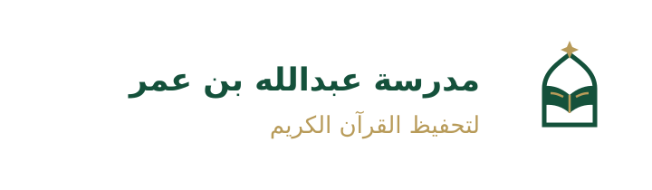
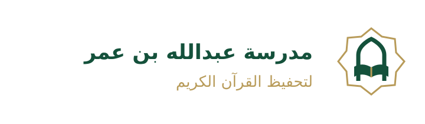
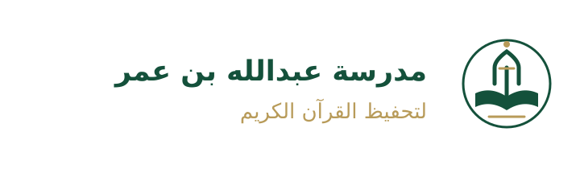

ثلاثة اتجاهات بصرية أصلية مرسومة بصيغة SVG بخلفية شفافة. لكل اتجاه رمز مستقل ونسخة كاملة. شعار المدرسة الأساسي هو المعتمد؛ هذه مقترحات أرشيفية. أصوات الإشعارات خيارات شخصية فقط.



أصوات إلكترونية أصلية قصيرة، أُنشئت لهذه المراجعة. اضغط التشغيل للاستماع؛ لا يوجد تشغيل تلقائي.